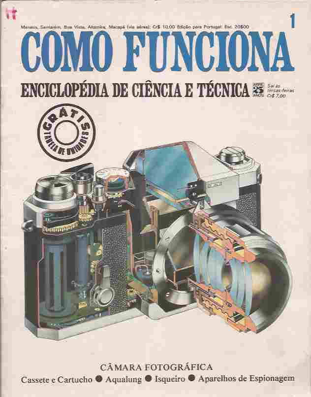
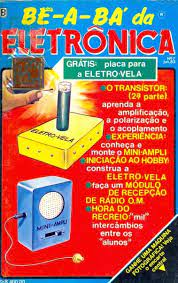
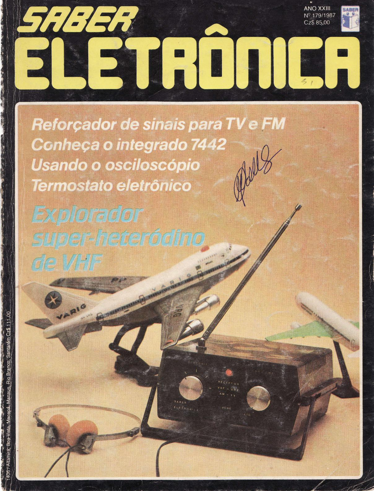
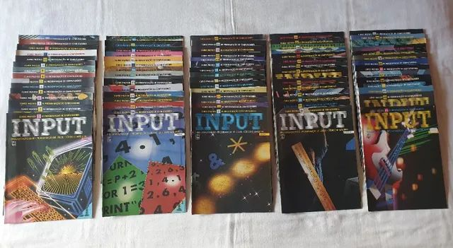
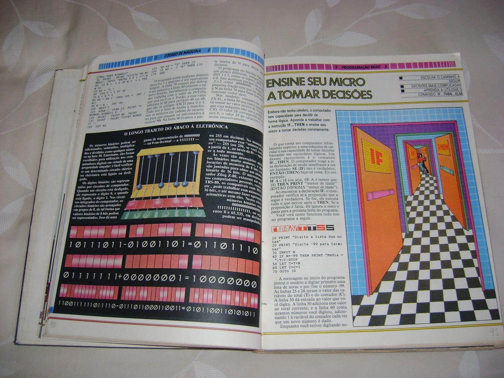
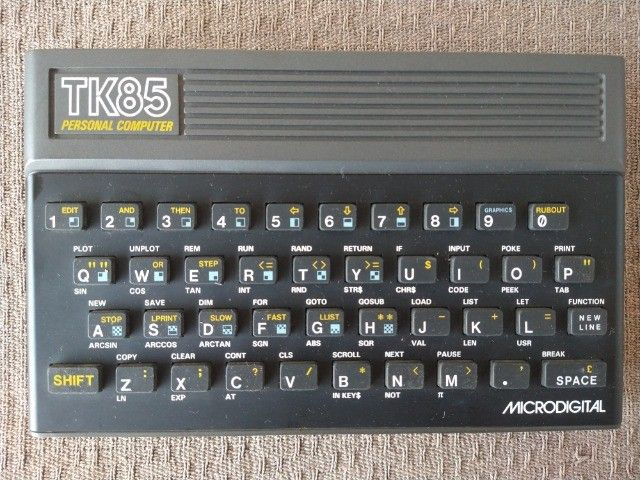
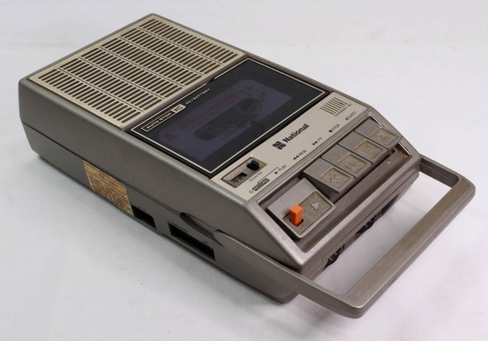
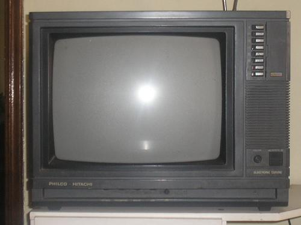

|
Desde criança, sempre fui muito curioso. Sempre desmontava tudo para saber como funcionava.
Às vezes, não conseguia montar novamente, rsrs. Adorava uma coleção de livros da editora Abril
chamada "Como Funciona".
|
|

|
|
Acabei me interessando por eletrônica na época e sempre comprava revistas de eletrônica em bancas d
e jornais para fazer as montagens (sirene, pisca-pisca de LEDs, transmissor de FM, etc.).
|
|


|
|
Em minha adolescência, apareceu em fascículos uma publicação sobre informática e programação básica
chamada INPUT. Fiquei doido com os fascículos, lia tudo, porém não tinha computador para testar.
Por curiosidade, os computadores da época na maioria eram baseados no Z-80, tinham entre 16 e 48 Kb de
memória.
Isso mesmo, rsrs, era só uma vaga lembrança. Tudo era gravado em gravadores de fita cassete
portáteis e o monitor era a TV de tubo da época.
|
|


|
|
Meu primeiro micro foi um TK-85 com gravador National, e a TV era a da sala mesmo. Não tinha internet,
o negócio era comprar as revistas e digitar os programas, rsrs. Às vezes conseguia uma fita emprestada
com um amigo e fazia aquela cópia, mas era divertido.
|
|



|
|
Fiz um curso de eletrônica, arrumava uma coisa aqui, outra ali, mas nunca trabalhei com eletrônica.
Tive a oportunidade de trabalhar em uma escola de informática como monitor, ficava lá mesmo pelos
computadores, já que podia usar à vontade.
|
|
Quando as escolas de informática começaram a pipocar no país, eu dava aulas de MS-DOS, LOTUS 1-2-3
(Excel da época), WORD STAR (Word da época) e DBASE (Banco de dados da época). Depois vieram o WINDOWS
3.1,
WINDOWS 95, WINDOWS 98 e assim foi. Até 1998, dei muitas aulas em cursinhos de informática. A partir de
1998,
comecei a fazer montagem e manutenção de computadores. Mais tarde, fazia cabeamento de redes e
manutenção
de impressoras jato de tinta e matriciais.
|
|
Em 2006, por motivos adversos e influências pessoais, acabei abandonando a área e iniciei uma jornada
totalmente diferente. Comecei a trabalhar em uma empresa de construção civil para a indústria, onde
comecei como auxiliar de almoxarife e cheguei a supervisor de almoxarifado. Fui gerente administrativo
de uma empresa de locação/assistência técnica de equipamentos para a indústria, gerente operacional de
uma empresa de topografia e supervisor operacional de logística.
|
|
Até chegar a este momento, onde quero voltar para o lugar que não deveria ter saído, e me tornar um
desenvolvedor e mostrar para muitos que a idade em tecnologia não é um obstáculo.
|